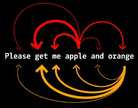

Mastering AI Chatbots: Optimizing Research through Effective Use
Skill training LBG Career Center
2024-10-29
AI and Science
 Source: Discover Magazine
Source: Discover Magazine

AI

→
Image classification
→
Lemon
LLMs
Text
→

→
Text
Text representation
Words
Even though the sound of it is
something quite atrocious, if you
say it loud enough, you’ll always
sound precocious,
Supercalifragilisticexpialidocious!
Marry Poppins
→
Tokens = “Subwords”

How are words represented numerically?
- Vector embeddings
= word embeddings

- LLMs: contextual word embeddings
- Kontext (vor und nach dem Wort) wird mit repräsentiert
- Beispiel “Apple”: Mac oder Frucht?

Voice Control
- ChatGPT App on Mac & Smartphones
- Otherwise: Chrome extension Voice Up (ChatGPT & Claude)
Voice Up
- Hold SPACE (outside text input) to record, release to submit
- ESC to stop & transcribe text without submitting
ChatGPT App

- Headphones for an ongoing conversation
- Microphone to record, stop to transcribe
Emotional prompts
- Emotional expressions can lead to better results (Cheng et al., 2023)

Write your answer and give me a confidence score between 0-1 for your answer.
You'd better be sure.Customizing the default version of ChatGPT
- System prompts**: Prompts that are entered each time, e.g. emotional prompts


“This is extremely important for my job, please work accurately and check that everything is correct.”
Creating Custom GPTs: How to


- GPT Builder asks more questions
- Try it out and keep “talking into it” until it fits